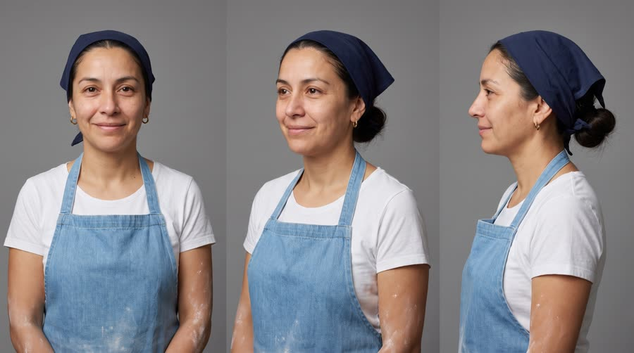
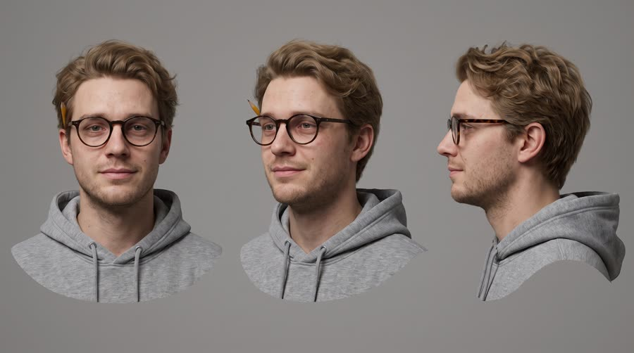
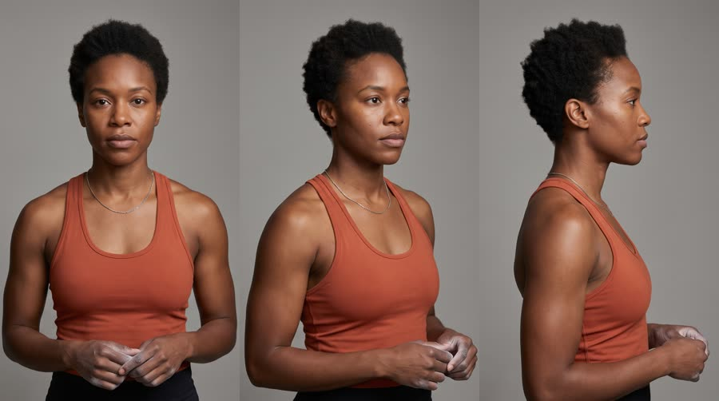
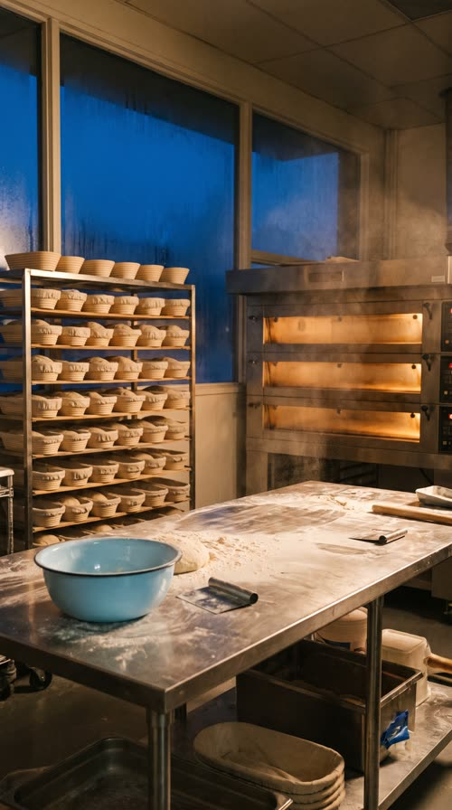
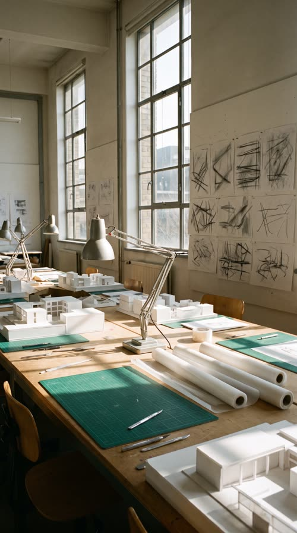
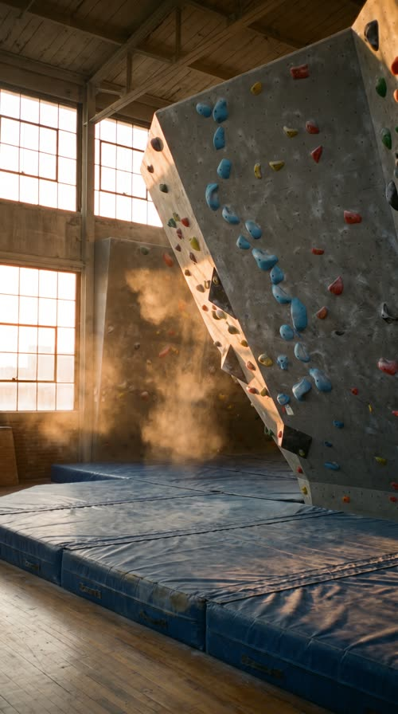

The Wall
Three people, one day, three walls: a baker at 5am, an architecture student at 2pm, a climber at 7pm. Each hits theirs, each reaches for Red Bull Sugarfree, each gets over it, all cut to one beat.
The number 2 format by Meta ad volume because it shows the product fitting many lives at once, so more viewers see themselves in it. Rhythm holds attention without a plot, and repetition (same framing, different person) makes the product the constant. It fails when it becomes pretty stock footage: the recurring visual motif and the beat-locked product moment are what make it an ad.
Contact sheet
One keyframe per shot, with the caption as it will appear.


Cast and world

Voice: no lines

Voice: no lines

Voice: narrator: warm, dry, close to the mic, a smile in it, unhurried, American, speaks in short plain phrases



World. One day in a fictional mid-sized North American city: a small neighbourhood bakery before dawn, a university architecture studio in the afternoon, a bouldering gym at sunset, and a rooftop at blue hour. Palette. Blue dawn, white midday, amber sunset, deep blue dusk; each location carries one sky-blue or silver echo of the can (a denim apron, a silver desk lamp, a blue climbing hold), warm gold as the shared accent.
Fictional brands. Hearth and Rye (the bakery, named in the plan only, never shown as readable text); Kestrel Bouldering (the gym, no visible signage)
Beats
| Time | Beat | What happens |
|---|---|---|
| 0-2 | hook | A floury hand slams dough flat in a dark bakery, flour bursting through dawn light. The narrator names the idea: every day has a wall. |
| 2-8 | setup | Three people hit three walls on three downbeats: the baker at 5am, the student at 2pm, the climber at 7pm staring up at a literal wall. |
| 8-12 | product | The music drops out: the can cracks in the bakery in macro, then the student sips and sits up. Brand line and the one benefit. |
| 12-20 | build | The drop: bread out of the oven, the last roof glued onto the model, the climber tops out in a burst of chalk, one per bar. |
| 20-24 | payoff | The climber sits on the mat with her can, grinning up at the wall she just beat. |
| 24-30 | cta | Blue hour on a rooftop, the can on the ledge as the city lights come on. Get over it. Tagline. |
Screenplay
28 spoken words in 30 s. Each line keeps its intent (fixed in the template) and its wording (written for this product).
| Time | Speaker | Line | Intent (template) |
|---|---|---|---|
| 0.2-1.8 | Keisha (off camera) | Every day has a wall. dry, close, a knowing half-smile, in the gap before the kick drum | Hook: state the universal problem the montage will repeat, in five words or fewer. |
| 2.3-3.2 | Keisha (off camera) | Early shift. flat, on the beat, like a caption read aloud | Label the first person's version of the problem in two words. |
| 4.3-5.0 | Keisha (off camera) | Deadline. flat, on the beat | Label the second person's version of the problem in one word. |
| 6.3-7.1 | Keisha (off camera) | Last set. a touch warmer, she is talking about herself | Label the third person's version of the problem in two words; this one is the narrator's own. |
| 8.4-9.8 | Keisha (off camera) | Red Bull Sugarfree. clear and unhurried in the silence, right after the can crack · Say: RED BULL SHUG-er-free, three clear words | Product line: name the product in the silence after the music cuts. |
| 10.2-11.8 | Keisha (off camera) | Helps you concentrate. No sugar. matter-of-fact, landing 'No sugar' just before the drop | The one benefit that gets people over their wall, using an allowed claim only. |
| 20.4-22.0 | Keisha (off camera) | Whatever your wall is, breathing a little from the climb, warm | Payoff: widen the idea to the viewer's own version of the problem. |
| 24.6-25.6 | Keisha (off camera) | get over it. playful, a smile you can hear | CTA with a wink: the problem word turned into the instruction. |
| 27.4-29.2 | Keisha (off camera) | Wiiings without sugar. warm, unhurried, over the last held chord · Say: WINGS, stretch the vowel slightly | Tagline in the brand's own words. |
Generation plan
U1 · 0 to 8 s · 9 s generation
Shots S01, S02, S03, S04 · References: marisol card, theo card, keisha card, S01 keyframe as first frame
9:16 candid lifestyle montage, documentary handheld, natural light, light 16mm grain, four shots, hard cuts exactly every 2 seconds. Shot 1 (0 to 2 s): close-up of the floury hands of @Image1 (Marisol, navy bandana, sky-blue denim apron) slamming dough flat on a steel bakery bench before dawn, a burst of flour through blue window light. Shot 2 (2 to 4 s): medium shot of @Image1 leaning on the bench, eyes closing, a yawn she cannot stop, orange oven glow behind. Shot 3 (4 to 6 s): medium shot of @Image2 (Theo, round tortoiseshell glasses, grey hoodie) dropping his forehead onto a desk beside a half-built plain white foam architecture model in bright afternoon light. Shot 4 (6 to 9 s): from slightly behind and below, @Image3 (Keisha, short natural coils, burnt-orange tank top) claps chalk off her hands and looks up at a tall overhanging climbing wall in amber sunset light; the wall is vertical, normal gravity. Each person appears only in their own shots. Unposed, nobody looks at the camera. Native sound: dough slap, oven hum, a thud, a chalk clap. No music, no dialogue, no text on screen, no logos.
U2 · 8 to 12 s · 5 s generation · exact-risk (short, cheap to re-roll)
Shots S05, S06 · References: product can official, theo card, S05 keyframe as first frame
9:16 candid lifestyle. Shot 1 (0 to 2 s): locked-off macro, the exact can from @Image1 stands upright on a floured steel bakery bench in blue dawn light, label to camera, straight and undistorted; floury fingertips pull back the tab, a crack, a small puff of cold vapour. Shot 2 (2 to 5 s): medium close-up of @Image2 (Theo) at a bright studio desk, he takes one sip from the same design of can and lowers it to chest height with the label readable, eyes already on his white foam model, a hint of a smile. One can per person. Keep the can's shape, colours, wordmark and two bulls exactly as @Image1. Native sound: the can crack and fizz, a sip, studio murmur. No music, no dialogue, no text on screen.
U3 · 12 to 24 s · 12 s generation
Shots S07, S08, S09, S10 · References: marisol card, theo card, keisha card, S09 keyframe as reference, S07 keyframe as first frame
9:16 candid lifestyle montage, energetic handheld, cuts on the beat. Shot 1 (0 to 2 s): @Image1 (Marisol) pulls a wooden peel of golden loaves out of a glowing deck oven, steam, the bakery window now sunrise gold, she is grinning. Shot 2 (2 to 4 s): close-up, @Image2 (Theo) places the final white roof piece on a plain white foam model with tweezers, it clicks in, he pushes up his glasses. Shot 3 (4 to 8 s): low angle up a tall overhanging climbing wall at sunset, @Image3 (Keisha) makes a final dynamic reach and slaps a big sky-blue top hold, a cloud of chalk bursts off her hand into the light beams; she hangs by her hands, normal gravity, the wall stays vertical. Shot 4 (8 to 12 s): @Image3 sits on a blue crash mat breathing hard, holding one can like the product loosely on her knee, label to camera, grinning up at the wall. Each person appears only in their own shots. Native sound: oven door, a click, a slap and a shout of effort, breathing. No music, no dialogue, no text on screen, no logos.
U4 · 24 to 30 s · 6 s generation · exact-risk (short, cheap to re-roll)
Shots S11 · References: product can official, S11 keyframe as first frame
9:16 premium pack shot at blue hour. Slow gimbal push-in on the exact can from @Image1 standing upright on a weathered concrete rooftop ledge, label to camera, condensation droplets, the can in the lower third; behind it a blurred generic skyline of plain towers whose windows light up one by one, no signs or landmarks, deep blue sky with a gold band on the horizon. The can does not move or change shape. Keep clean empty sky above the can. Native sound: distant city, a breeze. No music, no dialogue, no text.
Sound, music, voice, captions
| 0 to 8 s | walls | 120 bpm, one bar per shot (a cut every 2 s on the downbeat). Muted indie-electronic groove in A minor: a dry kick on 1 and 3, a filtered plucked synth riff, clapped snare on 2 and 4 that lands with the dough slap, the thud and the chalk clap. Each bar leaves a half-beat gap at the top for the narrator's word. |
| 8 to 12 s | drop out | Everything cuts to silence on the downbeat of bar 5 so the can crack lands alone, then a single rising riser and a reversed cymbal swell under 'Helps you concentrate. No sugar.' that peaks exactly at 12.0 s. |
| 12 to 20 s | drop | Full drop at 12.0 s, key lifts to A major: four-on-the-floor kick, big open clap, bright synth lead playing the riff an octave up, one cut per bar; a half-bar stutter (two 8th-note hits) at 18.0 s lands on the hand slapping the top hold. |
| 20 to 30 s | glow | Drums fall away to a warm pad and the plucked riff at half volume, leaving room for the narrator; a final soft kick at 24.0 s under 'get over it', then one held A major chord from 26 s that rings out past the last frame. |
Added sound
- 8.1 s: can crack and fizz, dry and close (the product moment lands in the music's silence and must be crisp; only added if the native crack is weak)
- 18.0 s: hand slap on the hold with a chalk puff whoosh (the payoff hit must sync exactly with the stutter in the music)
- Keisha: voiceover recorded separately (TTS with the narrator voice brief, or a voice-clone of a native Keisha breath line from U3), dry and close, placed in the music gaps; the generations carry no dialogue
font: Archivo Black, size: 7% of frame height for one or two word lines, 5% for full sentences, color: #FFFFFF, active word: the key word turns #7CC6F0 (can sky blue) on the beat it is spoken, shadow: hard 0 3px 0 rgba(0,0,0,.35) plus soft 0 4px 14px rgba(0,0,0,.45), position: centre, 60% down the frame, above the platform UI safe zone, max words on screen: 3, box: False, animation: each caption pops in on the downbeat with a 4 frame scale from 92% to 100%, cuts out with the picture cut, case: uppercase for the one-word wall labels, sentence case for the product line
Post text- 26.4 to 30 s: Red Bull Sugarfree / Wiiings without sugar (Archivo Black, white, centred in the empty sky above the can, pops in on the 26.0 s downbeat with a 4 frame scale, 'Wiiings' in #7CC6F0)
Adaptation contract
How this same concept takes any physical product.
| Product type | Where it sits in the story | Scale |
|---|---|---|
| ingested | each person drinks it at the moment they hit their wall | hand |
| applied | each person applies it at their wall moment (lip balm at the bench, hand cream at the desk, sunscreen or chalk balm at the gym) | hand |
| worn | the one thing each person puts on to get over the wall (headphones, shoes, glasses, a jacket) | body |
| handheld | the tool each person picks up at the wall (earbuds, a better pen, a bottle, a phone accessory) | hand |
| carried | the bag each person unzips at the wall to pull out what gets them through | hand to lap |
| home | the one thing at home or at their workspace that resets them (chair, lamp, speaker, kettle), switched on at the wall | room |
| consumable | the refill or pack each person reaches for from a shelf or pocket at the wall | hand |
Style bible
Look. Rhyming frames: each person is introduced in the same framing and the same frame position (centred, mid-chest, eyes on the upper third line) so the cuts read as one idea repeated. Natural, lived-in locations, real textures (flour, chalk, foam board, sweat). Colour grades warm to cool through the day: blue dawn, white midday, amber evening, dusk. The product appears as the one crisp, cold, saturated object in every world it enters.
Camera. Mostly handheld with a steady, human operator feel; gimbal floats for the payoff; locked-off macro for the product crack. 24 to 35mm for people in their places, 50mm for faces, 100mm macro for the can. One whip or match cut per movement (the hand slamming the bench matches the hand slapping the climbing hold). Frames are composed so a cut on a downbeat lands on motion, never on a still.
Light and texture. Motivated natural light only: window light at dawn, overhead fluorescents softened by daylight at midday, gym LEDs mixed with sunset through high windows, blue hour for the close. Bright, airy exposure, faces never in silhouette. Clean digital with a light 16mm-style grain added in post, gentle highlight bloom, real skin texture, dust and flour and chalk particles caught in backlight.
Pacing. Built on a fixed tempo grid (120 bpm, one bar is 2 s). Setup cuts every bar, the product moment holds for two bars, the build after the drop cuts every bar with a half-bar stutter at the peak, and the CTA holds three bars with the music thinning out. No cut ever falls between beats.
Sound. Music leads: one licensed-feel track generated as a single piece with a clear drop at the product turn. Voiceover is a single narrator, dry and close, sitting in the gaps the music leaves (the arrangement drops out for each line). Native sound from the generations is kept low under the music, lifted only for the textures the viewer should feel (flour slap, can crack, chalk clap).
Known failures.
- stock-photo smiles: ask for mid-action, unposed, not looking at camera
- people across shots drift in face and wardrobe: pass the cast card every time and repeat hair and clothing words
- a montage of three people in one generation unit merges their faces: name each person with their own @Image reference and one shot each
- flour, chalk and dust read as noise or snow at 720p: keep it backlit and mid-ground, one burst per shot
- the model adds a second can or a generic bottle beside the hero can: say one can only, and what else is on the surface
- climbing wall shots come back rotated or with the climber horizontal: say upright vertical composition, the wall is vertical, the climber hangs by her hands with normal gravity
- foam architecture models pick up readable labels: say plain white foam board with no writing
- the rooftop skyline gets real landmarks and billboards: say a generic skyline of plain towers with dark windows and no signs
- the model draws the bakery and gym as empty stock sets: keep the cast card and a mid-action verb in every people shot
- pack shots on a surface sprout a hand holding the can: say the can stands on its own, no hands, no arms, no people in frame
- an unspecified hand opening the can comes back large and masculine: describe the owner's hand (small, slender, short nails, flour on the knuckles)
Claims and cost
Claims used (all from the product page): Caffeine helps to improve concentration and increase alertness; Same benefits of the original Energy Drink, without sugar (as 'No sugar' and the tagline)
Video estimate: 32 s of generation at $0.27/s = $8.64 first pass, $20 to 30 with retakes, plus about $1.5 music.